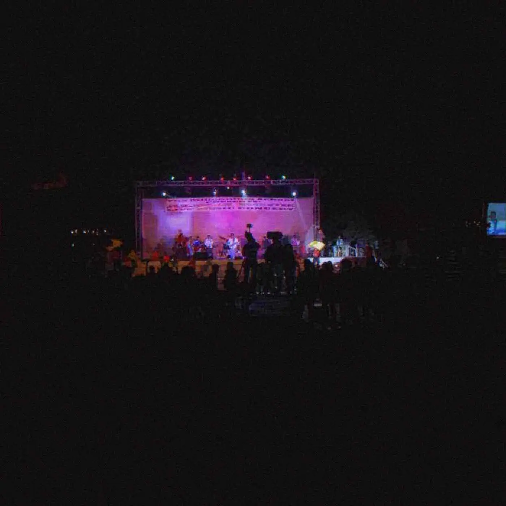

Scene Report
She Showed Up
On 25 May 2025 Lorde stood in the crowd at Mary's Underground in Sydney for a night of her own song.
- format
- Scene Report
- date
- May 26, 2025
- author
- CJ Archer
- artists
- Lorde
- words
- 754 words · 3 min
- photo
- Photo: Alpharockindia
Mary’s Underground in Sydney held a Lorde night on Sunday 25 May 2025 — drag, drinks, “What Was That” — and Lorde came. She did not play the official set the booking might have been. She stood in the room, skipped the green room, sang the song with the people who had come to sing it, left when the night tried to make her leaving official, and came back. That sequence is the story, and it is a story about a specific room rather than about celebrity in general. A singer at the peak of a new cycle chose the floor over the photograph. The photograph happened anyway. The floor happened first.
“What Was That” was the song, the first dance-pop she had put in front of people since the long quiet that followed Melodrama. Melodrama, in 2017, had been the album where the party and the wreckage were the same arrangement, produced in large part with Jack Antonoff, heard by a very wide public as the sound of being young and too much. The years between that album and this Sunday were a different public shape: Solar Power, a step back from the club, a lot of argument about whether she still wanted the dance. “What Was That” answered in the affirmative and in a specific city. The lyrics’ New York — Baby’s All Right, a Washington Square gathering broken up by police in the month before this Sydney night — is the song’s own geography. Sydney was the room that got the visit.
Virgin, the album, was dated to 27 June 2025. The collaborators named with the project included Jim-E Stack and Dan Nigro. A late-2023 breakup in New York sits in the background of the songs, in the way pop biographies always sit in the background, and it is enough to know the album is a city record without narrating someone else’s private life beyond what the songs themselves put on the table. The Sunday at Mary’s was a month before the album. That timing is why the appearance mattered to anyone who throws a small night. She was not on a tour stop. She was in town, and the town’s version of her song was already happening, and she joined it.
Dedicated nights — a bar plays one artist’s records, people dress the part, the DJ is a fan with a library — are a minor literature of pop. They can be embarrassing and they can be the only place a song is heard loud by people who know every word. Artists almost never come, because coming collapses the distance that fame uses as a schedule. When they do come, the night either becomes content or becomes a room. The reports from Mary’s, and the clip of her returning after an attempted extraction, point at the second outcome. Extraction is what security does when a body has been reclassified from “guest” to “problem.” Coming back is a decision. It is a small decision and it is the whole story. A person who writes songs about crowds stood inside one and did not immediately convert it into a stage.
The underground, a word this magazine uses too easily, does not need Lorde to be underground. Mary’s is a venue with a name and a door, not a warehouse with a myth. What matters is whether the artist still wants the sound of strangers singing more than the control of a show. On 25 May 2025, for a portion of an evening, the answer was yes. That answer has a limited shelf life as news and a longer one as a scene note. Scene, here, meaning: a city, a bar, a song that was weeks old, a Sunday. DJs in other cities who have thrown the equivalent night — and then stood behind the booth hoping the singer does not walk in, and hoping she does — recognized the tilt in the floor. Writing the night down accurately is the job.
“What Was That” can be played without Sydney and without the anecdote. It is a dance-pop single with a melodic appetite Melodrama listeners will recognize and a drier emotional temperature. The anecdote is why the single has a report in a zine rather than only a review. She showed up. The phrase is ordinary and, in context, accurate. The kids who booked the records were already there. The singer was extra. The extra is what people will remember, and the records are what the night actually was.